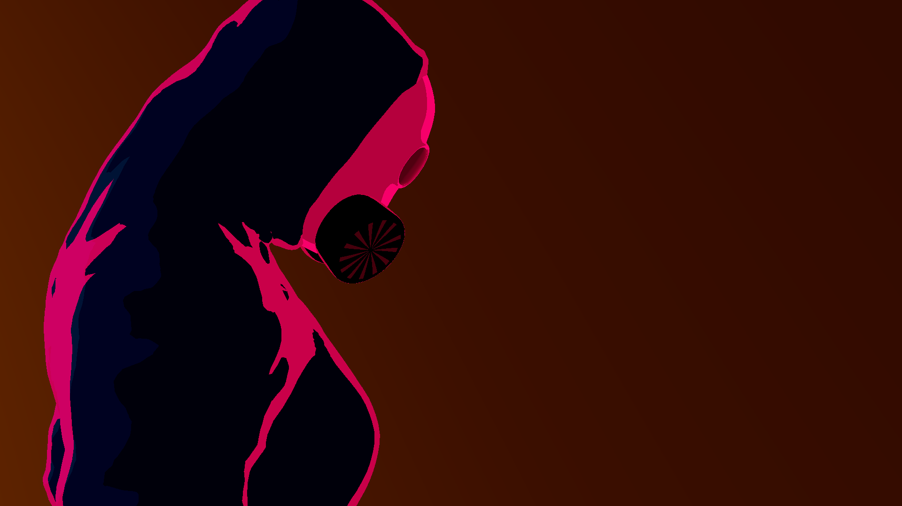
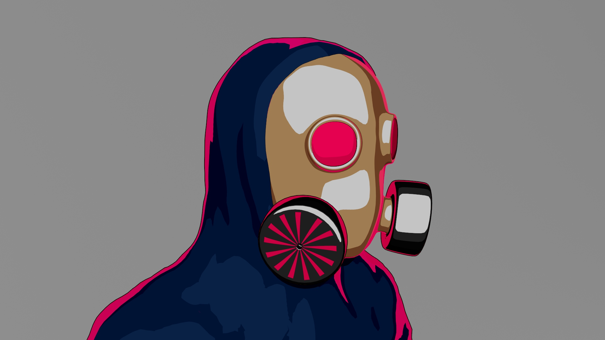
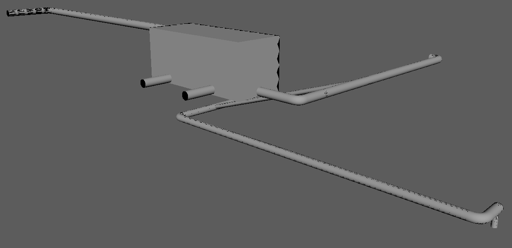
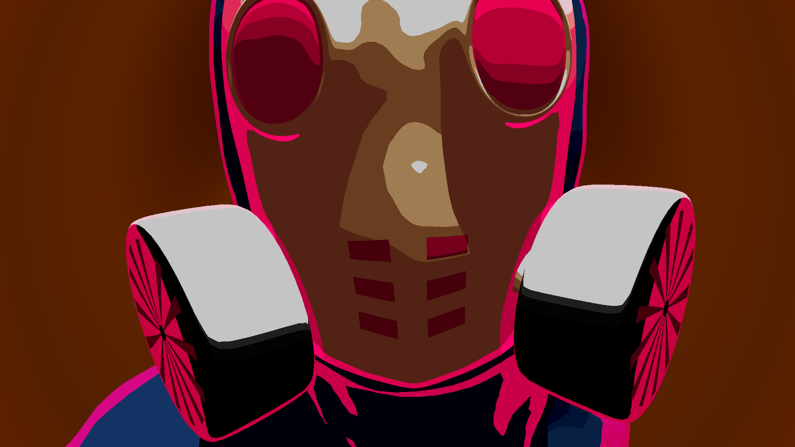
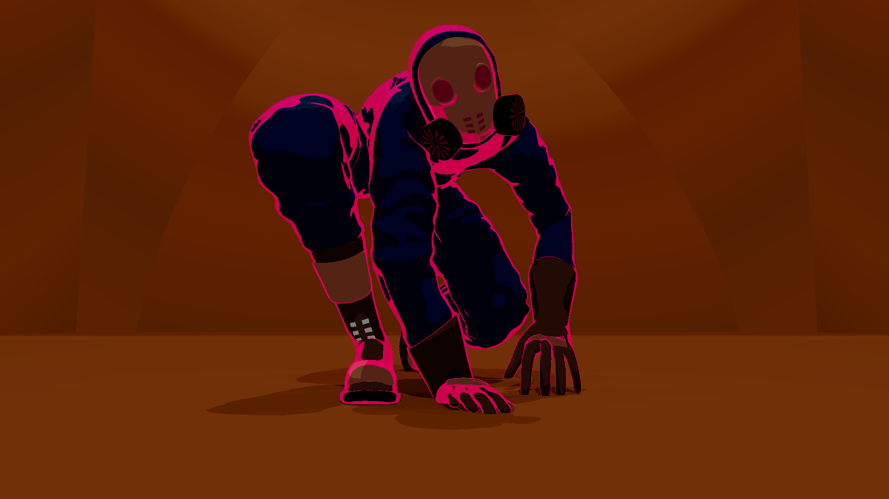
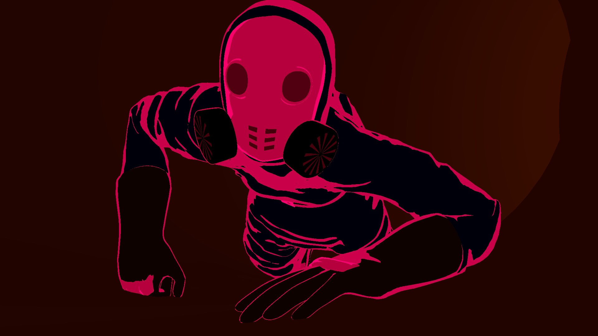
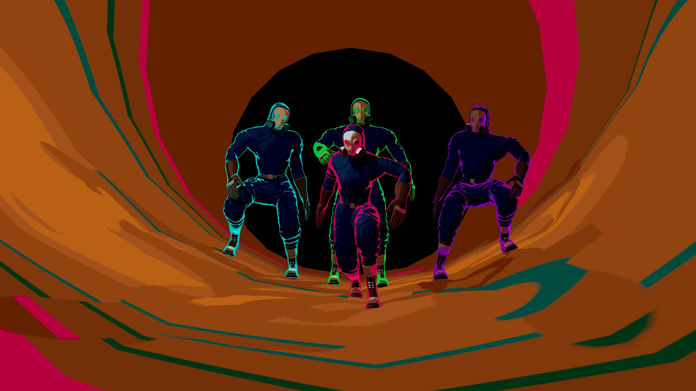

Narrow Escape is a short movie of an action scene that involves Anya, the main character, running away from three goons through a steampunk facility made of weirdly metallic interconnected tubes that lead deeper and deeper into the earth.
For this project, I wanted to focus on the animation part, creating an animation that showcased fluid, complex
movements that showed the weight and force behind each action. This lead to the idea of an escape scene.

The Concept
With the steampunk theme in mind and the focus of the project being on the animation, I begun my brain-storming by imagining how I could create something that looked good, heavily stylized and fun to see.
Models
One thing I wanted to avoid as much as possible was the uncanny valley effect. By being in a steampunk setting, the idea of making my characters people that lived in a hostile environment and needed full body clothing for protection came to mind. So I decided all characters would have their entire bodies and faces concealed in oversized clothing and a gas mask. This made it so I did not need to model nor animate the faces.

For the environment I wanted it to be an easy to make and to increment playground for the characters to run around. I needed a workflow that would let me easily increase the size of the environment and make as many obstacles as I wanted. This led me to think of an never ending web of metal tubes that would be part of some sort of facility where the tubes would lead deeper and deeper into the ground, ending with an vertical tube that has no visible ending.

Textures
For the texturing I knew from the start I wanted a stylised and 2D-like look. This would help with avoiding the uncanny valley effect while also letting me play around with the look of the project.

Animation
For the animation I wanted it to also have a more stylised look to match the visual style of the models, making me lean into a slower stop-motion-like frame rate. This would come handy in giving the animation weight and impact.

Modeling
The modeling was done by modeling all parts of the character uniform seperatly, joining them togheter during rigging.
The folds in the clothes were done by hand, using Maya's sculpting tools.
Mask
Clothes
Belt
Gloves
Boots
Full Model
Character Shading
The texturing of the models was one of my favorite parts of the project.
Although I had references and a certain style in mind, I came into this part of the project with the intent of experimenting a lot and finding the style along the way.
I ended up using the aiToon Shader available in Maya and tuning it's values to arrive at the desired look.
Tonemap
For the color output of the shader I used a tonemap, which allowed me to tell exactly which color the shader should have at each light level in the scene
I settled for a non-interpolated tonemap that would show clear color bands according to the change in the light levels.
This gives a cartoon look to the texture of the characters and offers a lot of freedom on how I could change the visuals of the animation.
Characters
The texturing on the characters was made by applying various different shaders to the different surfaces.
Characters also received a rim light, which would illuminated the characters from the opposite side of the camera, giving a countour effect that hightlights the silhouette and details of the characters.
While experimenting with the rim light, I ended up giving the characters vibrant rim light colors, giving them a stylized shading.
While experimenting with the shader I added the same rim color to the darkest light level in the tonemap, which made it so when characters were in shadow they would get a super cool stylish neon-like look.
Not only did this end up looking great, but it also helped with visibility in darker areas.
I ended up adding darker areas to the animation to showcase this effect.

Shader when in the light and when in the dark
The effect is controled by assigning only some parts of the mesh to have the rim light color when in the dark and the other parts to remain dark.
Anya Final Shader
After being sure of the style of the texturing, I had the idea of giving individual colors to each character.
Not only did it help to distinguish the characters apart, but it also made the visuals unique and pop with color.
In this image we can see Anya in all of her glory!
The Goons
I wanted to add more characters to the animation, mainly three goons that would be chasing after Anya. I didn't, however, want to model three more characters, so I ended up using a lattice modifier on Anya's model, which looked good enough.
Oscar would be purple, Manuel would be green and Joseph light blue.
Map
For the map I ended up using the same tecnique, being really careful with how I would choose the colors of the tonemap since I needed a very specific banding effect on the colors to properly show the shape of the tubes.
Setting up all the lights throughout the map was also a challenge, as they needed a very specifc spacing between them to make this effect work.
Map Shader Testing
The following screenshots come from tests before arriving at the final map shader.

Animation
The animation part of this work was super fun and by far my favorite. I made use of a big number of references and animation by hand for a full week, trying to meet the deadline.
The stop-motion-like framerate was hard to pull, as I didn't do enough research on how to arrive at the disered effect, making it inconsistent. I think that it still came out well enough.
The challenge of making the animation was super fun to tackle, even if it was hard.
At the end, I think I did a good job at achieving fun and dynamic movements and that the animation is interesting to watch.
Unfortunatly the animation could not be fully finished, having a full scene cut between the two last scenes of the animation.
This scene would have Anya slide and jump through moving fans, which the trio would have an harder time doing.
This would explain better reason Anya had so much time to ponder jumping into the abyssal hole.
Final Thoughts
This is a work I am proud of. The animation has a very unique look and feel, fun and weighty movement and came out as a nice all around short movie.
I learned a lot in all the fields of 3D animation during this work, having a lot more to learn still. But even then, I know feel a lot more confortable with modeling, texturing, rigging and animation.
This proejct not only made me grow a love for making animation, but it also is the start of my love for heavily stylized 3D graphics. Something I wish to continue to study and work on, hopefuly implementing and perfecting in later projects.